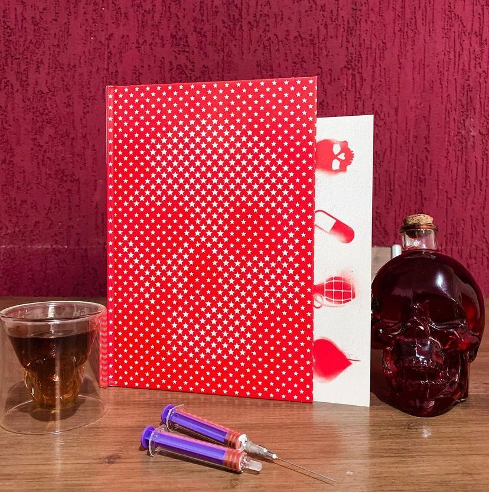

Cherry: inocência Perdida
“Este não é um livro sobre redenção; é uma história sobre relacionamentos destrutivos, potenciais desperdiçados e oportunidades perdidas.”
A Experiência de combater na ocupação do Iraque deixou marcas emocionais profundas no jovem Nico Walker, que, após o retorno aos EUA, acabou buscando conforto nas drogas. Viciado em heroína e sem grana, ele assaltou dez bancos em quatros meses. Em seu romance com contornos bibliográficos acompanhamos as percepções, angústias e temores do narrador, e testemunhamos seus momentos mais íntimos de horror e êxtase. Escrito de forma coloquial e realista, Cherry nos convida a um mergulho profundo na mente do seu protagonista irônico e mordaz neste que é o primeiro grande romance sobre a epidemia de opióides. ☠️💊💉
Sufocante, angustiante e necessário, é exatamente assim que eu defino Cherry. Quando o autor Nico Walker escreveu a obra ele ainda cumpria pena e o livro contém: “um relato explosivo e corajoso, com fortes contornos autobiográficos”. Na obra vemos como os soldados são mandados para guerrear sem nenhum apoio e depois de todo terror voltam e não recebem nenhum apoio psicológico adequado para superar o que passaram especialmente o Transtorno de Estresse Pós Traumático. Os relatos de guerra são bem fortes na trama, o uso de drogas, a linguagem sexista e se você é sensível a isso eu desaconselho a leitura. Porém, faz parte do dia a dia da realidade desses soldados e é interessante e triste ver esse lado da moeda! A arte, edição, adaptação e tradução da @darksidebooks está perfeita ! O livro acabou ganhando uma adaptação e virou filme e está disponível pela Apple TV.